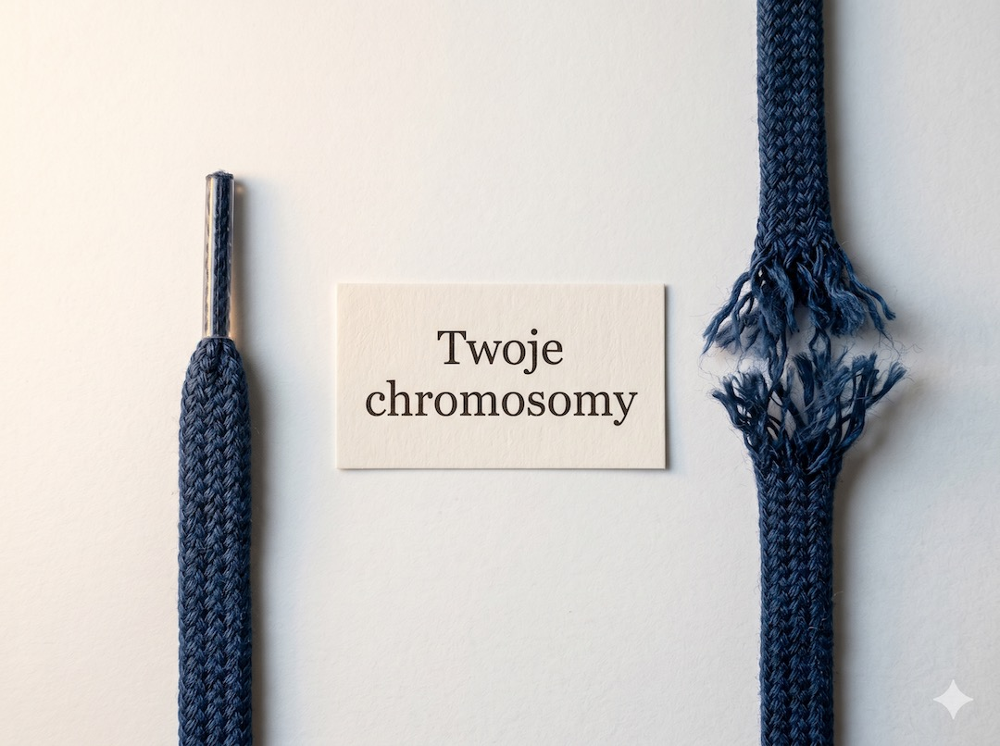
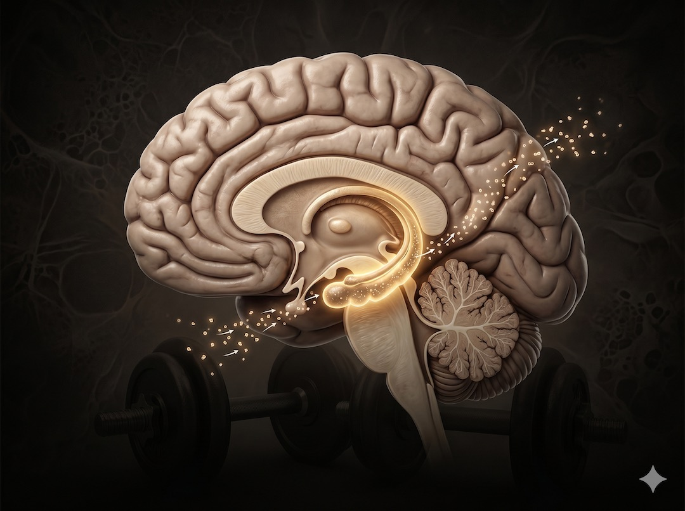
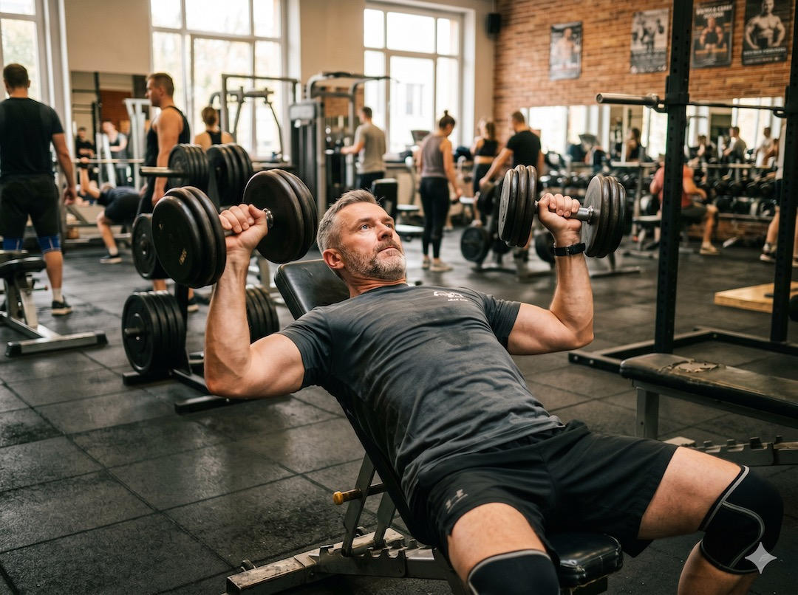
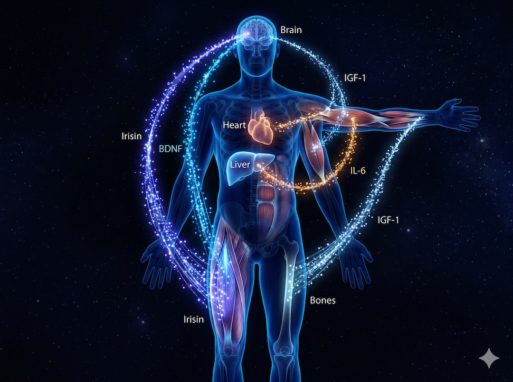
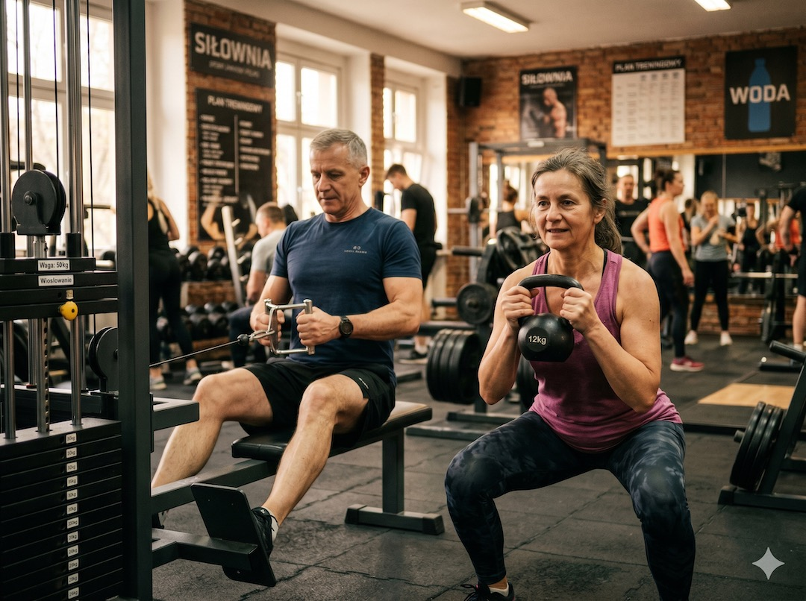

Trening siłowy to znacznie więcej niż budowanie mięśni czy poprawa sylwetki – to potężna interwencja biologiczna, która zmienia sposób, w jaki starzeje się Twoje ciała na poziomie komórkowym. Najnowsze badania wykazują, że regularny opór mięśniowy aktywuje enzymy naprawcze DNA, wydłuża telomery (ochronne końcówki chromosomów) i uwalnia miokininy, które działają jak naturalny nawóz dla Twojego mózgu. Dla osoby po 50. roku życia każda sesja z obciążeniem to sygnał wysyłany do organizmu: „nadal jesteśmy w fazie wzrostu i regeneracji”, co pozwala realnie obniżyć wiek biologiczny nawet o kilka lat.
Szybka odpowiedź
Tak, trening siłowy po 50 może wspierać niższy wiek biologiczny, bo działa na trzy mierzalne obszary: siłę chwytu, sygnały z mięśni oraz markery związane z telomerami i metylacją DNA. Najbardziej praktyczna dawka to 2 sesje tygodniowo po 30 minut, bez trenowania do upadku w każdej serii.
Kluczowe wnioski
Kluczowe wnioski
- 90 minut treningu siłowego tygodniowo może odmłodzić komórki biologicznie o 4 lata.
- Mięśnie działają jak organ wydzielniczy, produkując miokininy chroniące mózg przed demencją.
- Siła chwytu ręki jest lepszym predyktorem długości życia niż popularny wskaźnik BMI.
- Optymalne korzyści dla długowieczności osiąga się już przy 30-60 minutach ćwiczeń tygodniowo.
Telomery: Jak trening siłowy chroni końcówki Twojego DNA?
Telomery to ochronne kapturki na końcach Twoich chromosomów, które z każdym podziałem komórki ulegają skróceniu, co stanowi bezpośrednią miarę Twojego starzenia biologicznego. Trening siłowy aktywuje telomerazę – enzym odpowiedzialny za odbudowę i stabilizację tych struktur, co pozwala dosłownie „spowolnić zegar” wewnątrz Twoich komórek.
Badania z 2024 roku potwierdzają, że osoby trenujące siłowo przez 90 minut tygodniowo wykazują profil telomerowy odpowiadający osobom o 4 lata młodszym biologicznie od ich rówieśników prowadzących siedzący tryb życia.
Dlaczego to jest tak ważne po 50-tce? Ponieważ krytycznie krótkie telomery są sygnałem dla komórki, aby przestała się dzielić lub obumarła, co prowadzi do degradacji tkanek i narządów. Aktywacja mechanizmów obronnych poprzez trening oporowy to najlepsza polisa ubezpieczeniowa dla Twojego DNA. Więcej o starzeniu komórkowym przeczytasz w naszym dziale zdrowie.
Chcesz sprawdzić to dokładnie w praktyce? Zobacz poradnik jak zmierzyć wiek biologiczny i czym jest Zegar Horvatha, gdzie omawiamy testy metylacji DNA krok po kroku.
Wniosek praktyczny: Myśl o każdym powtórzeniu na siłowni jak o serwisie naprawczym dla swoich chromosomów, a nie tylko jak o budowaniu bicepsa.
- Telomery działają jak „plastikowe skuwki” na sznurówkach Twoich genów.
- Trening siłowy aktywuje enzym telomerazę, który odbudowuje DNA.
- 4 lata młodsze komórki przy zaledwie 90 minutach ćwiczeń tygodniowo.
- Krótkie telomery to wyższe ryzyko chorób serca i cukrzycy.

Mięsień jako organ wydzielniczy: Co Twoje ciało wysyła do mózgu?
Mięśnie szkieletowe to nie tylko tkanka mechaniczna, ale największy w Twoim organizmie organ wydzielniczy, który podczas pracy uwalnia setki bioaktywnych substancji zwanych miokininami. Najważniejsza z nich, iryzyna, przekracza barierę krew-mózg i stymuluje produkcję BDNF – białka zwanego „nawozem dla neuronów”, które wspiera pamięć, tworzy nowe połączenia i chroni przed demencją. Dzięki temu trening siłowy jest jedną z najskuteczniejszych metod niefarmakologicznych w zapobieganiu chorobie Alzheimera i depresji po 50. roku życia.
Oprócz iryzyny, mięśnie wydzielają także IGF-1, który regeneruje tkankę kostną i nerwową, oraz IL-6, która w kontekście treningu (a nie stanu zapalnego) poprawia wrażliwość na insulinę i przyspiesza metabolizm. Rola miokinin w zdrowiu jest dziś jednym z najgorętszych tematów w medycynie długowieczności.
Wniosek praktyczny: Każdy skurcz mięśnia to dawka „lekarstwa” dla Twojego mózgu, która poprawia koncentrację i nastrój niemal natychmiast po sesji.
- Iryzyna z pracujących mięśni stymuluje mózg do wzrostu neuronów.
- BDNF (nawóz dla mózgu) chroni przed otępieniem i demencją.
- Miokininy działają przeciwzapalnie na całe ciało.
- Im więcej masy mięśniowej zachowasz, tym lepsza ochrona Twojego układu nerwowego.

Siła chwytu ręki: Nowy, najważniejszy parametr Twojego zdrowia?
Współczesna geriatria uznaje siłę chwytu ręki za jeden z najważniejszych parametrów życiowych (vital signs), który przewiduje długość życia i ryzyko niepełnosprawności lepiej niż popularny wskaźnik BMI. Metaanaliza obejmująca 2 miliony ludzi wykazała, że osoby z silniejszym uściskiem dłoni mają o 67% niższe ryzyko przedwczesnego zgonu ze wszystkich przyczyn. Siła mięśniowa jest bowiem odbiciem ogólnej integralności Twojego układu nerwowego i metabolicznego, a nie tylko kondycji Twoich dłoni.
Dlatego w treningu po 50-tce tak ważzne są ćwiczenia angażujące całe ciało, które wymagają pewnego chwytu i stabilizacji. Proste testy, jak uścisk dłoni czy czas wstawania z krzesła bez pomocy rąk, dają lekarzowi więcej informacji o Twoim biologicznym wieku niż skomplikowane badania laboratoryjne. Parametry długowieczności powinny być monitorowane regularnie obok ciśnienia krwi.
Wniosek praktyczny: Jeśli zauważasz, że trudniej Ci odkręcić słoik lub nieść zakupy, to sygnał alarmowy, że Twoja „rezerwa biologiczna” maleje. Czas wrócić do treningu.
- Siła chwytu to barometr zdrowia całego organizmu.
- Przewiduje ryzyko zawału i udaru lepiej niż samo badanie cholesterolu.
- Osoby silniejsze statystycznie rzadziej trafiają do szpitali.
- Trening z hantlami to najlepszy sposób na wzmocnienie chwytu.

Epigenetyka: Jak trening siłowy „przepisuje” Twoje geny?
Trening siłowy nie zmienia sekwencji Twojego DNA, ale radykalnie wpływa na jego ekspresję poprzez mechanizmy epigenetyczne – dosłownie włącza geny odpowiedzialne za naprawę tkanek i wycisza te promujące stany zapalne. Badania wykazują, że regularne ćwiczenia oporowe pozostawiają w mięśniach trwały ślad molekularny, nazywany „pamięcią mięśniową”.
Dzięki temu, nawet po długiej przerwie, Twoje ciało jest w stanie wrócić do formy znacznie szybciej niż za pierwszym razem, ponieważ komórki „pamiętają” poprzednie bodźce na poziomie chemicznym.
Zjawisko to oznacza, że każda godzina zainwestowana w ruch po 50-tce procentuje przez lata, tworząc stabilny fundament metaboliczny. Nawet jeśli kiedyś ćwiczyłeś tylko rekreacyjnie, Twoje jądra komórkowe w mięśniach nadal tam są, czekając na sygnał do ponownej aktywacji. Epigenetyka dla początkujących to fascynująca dziedzina, która udowadnia, że geny to nie wyrok.
Wniosek praktyczny: Nigdy nie jest za późno na start. Twoje DNA tylko czeka na odpowiedni impuls, aby „włączyć” tryb regeneracji.
- Pamięć mięśniowa jest zapisana w chemicznych znacznikach na Twoim DNA.
- Trening wycisza geny sprzyjające starzeniu i chorobom.
- Komórki mięśniowe mają setki jąder, które gromadzisz latami.
- Twoje ciało po treningu staje się „inteligentniejsze” metabolicznie.

Kobiety vs Mężczyźni: Kto zyskuje więcej po pięćdziesiątce?
Choć utarło się, że siłownia to domena mężczyzn, najnowsze badania (np. Women's Health Study) wykazują, że to kobiety po 50. roku życia czerpią statystycznie większe korzyści z treningu oporowego w kontekście długowieczności. Regularne ćwiczenia siłowe u kobiet redukują ryzyko zgonu sercowo-naczyniowego aż o 30%, podczas gdy u mężczyzn ten spadek jest nieco mniejszy.
Co więcej, kobiety potrzebują mniejszej objętości treningu (krótszych sesji), aby osiągnąć ten sam ochronny efekt telomerowy co mężczyźni.
Dla kobiet w okresie menopauzy trening siłowy jest absolutnie kluczowy w profilaktyce osteoporozy, ponieważ jako jedyny bodziec mechaniczny zmusza kości do utrzymania gęstości mineralnej. Mit o „zbyt dużych mięśniach” u kobiet jest naukowym absurdem – przy naturalnym poziomie hormonów po 50-tce trening siłowy daje jedynie efekt ujędrnienia, siły i ochrony metabolicznej. Hormony po 50-tce wspierają te procesy, jeśli tylko dostarczymy im odpowiedniego bodźca.
Wniosek praktyczny: Panie powinny traktować hantle jako swój najważniejszy „kosmetyk” i lek przeciwstarzeniowy zarazem.
- Kobiety po 50-tce zyskują więcej lat życia dzięki treningowi siłowemu.
- 30% mniejsza śmiertelność sercowa u trenujących kobiet.
- Trening oporowy to jedyna skuteczna ochrona przed osteoporozą.
- Kobiece mięśnie szybciej reagują na sygnały regeneracyjne z treningu.

Praktyczny plan: Ile treningu naprawdę potrzebujesz dla długowieczności?
Zaskakującą wiadomością z ostatnich metaanaliz jest fakt, że optymalna dawka treningu siłowego dla przedłużenia życia wynosi zaledwie 30 do 60 minut tygodniowo. Nie musisz spędzać godzin na siłowni każdego dnia; jedna solidna sesja lub dwie krótsze po 20-30 minut wystarczą, aby uzyskać 15-20% spadek ryzyka przedwczesnego zgonu.
Co ciekawe, przy bardzo wysokich objętościach treningowych (powyżej 150 minut tygodniowo) korzyści te zaczynają powoli zanikać, co sugeruje, że dla dojrzałego organizmu kluczowa jest regeneracja i umiar.
Dla osoby zaczynającej po 50-tce, najważniejsze jest skupienie się na ruchach wielostawowych: przysiadach, wypychaniach i przyciąganiach, które angażują najwięcej mięśni naraz i wyzwalają największy wyrzut miokinin. Pamiętaj o progresji – ciężar musi być na tyle duży, by ostatnie powtórzenia w serii były wyzwaniem, ale technika pozostała nienaganna. Jak zacząć trening siłowy od zera dowiesz się z naszego przewodnika dla początkujących.
Wniosek praktyczny: Postaw na jakość, nie na ilość. Dwa treningi po 30 minut tygodniowo to „złota dawka”, która zmieni Twoją biologię na lata.
- Złoty standard: 2 x 30 minut treningu siłowego w tygodniu.
- Skup się na dużych grupach mięśniowych (nogi, plecy, klatka).
- Regeneracja jest tak samo ważna jak sam wysiłek.
- Zasada 150 minut: nie przesadzaj, więcej nie zawsze znaczy lepiej.

Jaka dawka treningu ma sens po 50?
W badaniach nad treningiem oporowym nie wygrywa heroizm, tylko powtarzalny bodziec. Najbardziej praktyczny cel po 50-tce to 2 treningi tygodniowo, po 6-8 ćwiczeń, z ostatnimi 2-3 powtórzeniami wyraźnie trudnymi, ale wykonanymi technicznie. To wystarcza, żeby ciało dostało sygnał: utrzymuj mięśnie, kości i sprawność metaboliczną.
| Element | Konkret | Po czym poznać, że działa? |
|---|---|---|
| Częstotliwość | 2 pełne treningi tygodniowo albo 3 krótsze sesje po 20 minut. | Po 3-4 tygodniach te same ćwiczenia są stabilniejsze, a schody mniej męczą. |
| Intensywność | Zostaw 1-3 powtórzenia „w zapasie”; nie kończ każdej serii walką o życie. | Czujesz wysiłek mięśni, ale następnego dnia możesz normalnie chodzić. |
| Ćwiczenia | Przysiad lub siadanie z ławki, zawias biodrowy, pchanie, przyciąganie, noszenie ciężaru. | Poprawia się chwyt, wstawanie z krzesła i pewność kroku. |
| Progresja | Najpierw dokładność ruchu, potem więcej powtórzeń, dopiero później ciężar. | Technika nie rozpada się przy ostatnich powtórzeniach. |
Kiedy zmniejszyć ciężar albo przerwać serię?
Przerwij serię, jeśli pojawia się ból w klatce piersiowej, zawroty głowy, nagła duszność, kłujący ból stawu albo promieniowanie bólu do ręki, szczęki czy pleców. Zmniejsz ciężar, gdy ruch robi się szarpany, oddech zatrzymuje się na siłę albo ból mięśni utrzymuje się dłużej niż 72 godziny. To nie ostrożność „na zapas”, tylko sposób na ciągłość treningu.
Jeśli chcesz przełożyć tę dawkę na plan tygodnia, ćwiczenia i progresję, zacznij od Centrum Treningu Siłowego po 50-tce.
Najczęściej zadawane pytania
Najczęściej zadawane pytania
Czy po 50-tce można jeszcze zbudować mięśnie, czy tylko je utrzymać?
Zdecydowanie można poprawić siłę i dobudować mięśnie, choć tempo bywa wolniejsze niż u 20-latków. Kluczem jest trening blisko wysiłku, ale bez technicznej rozsypki, oraz białko rozłożone w ciągu dnia. Praktycznie: 25-40 g białka w 2-4 posiłkach i progresja ćwiczeń co kilka tygodni.
Powiązane tematy: trening siłowy, dieta po 50-tce, sen i regeneracja, suplementacja.
Co to jest sarkopenia i czy trening siłowy ją zatrzyma?
Sarkopenia to postępująca z wiekiem utrata masy i siły mięśniowej, która zaczyna się już po 30-tce i drastycznie przyspiesza po 50-tce. Trening siłowy jest jedyną znaną medycynie metodą, która nie tylko zatrzymuje ten proces, ale potrafi go odwrócić, przywracając sprawność funkcjonalną i metaboliczną organizmu.
Czy trening siłowy jest bezpieczny dla stawów po 50. roku życia?
Prawidłowo wykonywany trening siłowy jest zbawienny dla stawów, ponieważ wzmacnia mięśnie, które je stabilizują, oraz poprawia smarowanie chrząstki stawowej. Kluczem jest poprawna technika i stopniowe zwiększanie obciążeń. W rzeczywistości to brak ruchu i słabe mięśnie są główną przyczyną bólów stawowych i zwyrodnień.
Czy muszę iść na siłownię, czy mogę ćwiczyć w domu?
Możesz zacząć w domu, używając masy własnego ciała, gum oporowych, hantli albo plecaka z książkami. Siłownia pomaga wtedy, gdy domowy ciężar przestaje być wyzwaniem. Najważniejsze jest to, żeby mięśnie dostawały rosnący bodziec, a nie to, czy ćwiczysz przy maszynie, czy przy kuchennym krześle.
Źródła
Źródła po 50-tce warto wdrażać krok po kroku i od razu łączyć teorię z praktyką. Dzięki temu łatwiej utrzymać regularność, poprawić bezpieczeństwo działań i szybciej zauważyć trwałe efekty zdrowotne w codziennym życiu.
- PMC11591842: Telomere Length and Strength Training in US Adults, 2024
- Frontiers in Physiology: Myokines and cognitive health in aging, 2024
- Am J Prev Med: Resistance Training and Mortality Risk Meta-analysis, 2022
- PMC10199130: U-shaped relationship of exercise and longevity, 2023
- Women's Health Study: Strength Training and Mortality in Older Women, 2018
- Endocrine Reviews: Muscle-Organ Crosstalk and Myokines, 2020
Uwaga: Artykuł ma charakter informacyjny i edukacyjny. Nie zastępuje konsultacji lekarskiej, diagnozy ani leczenia.